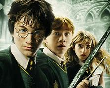

Harry Potter Series
1 Harry Potter and the Philosopher's Stone( the Sorcerer's Stone)
In Harry Potter and the Philosopher's Stone, we meet Harry, a young boy who learns he is a wizard on his eleventh birthday. After a life of neglect with his aunt and uncle, Harry discovers a hidden world of magic as he is invited to Hogwarts School of Witchcraft and Wizardry. Here, he meets new friends Hermione Granger and Ron Weasley and encounters magical creatures and challenging classes. The trio soon discovers the existence of a magical object called the Philosopher's Stone, which grants immortality, and uncovers a plot involving Lord Voldemort, a dark wizard who once tried to kill Harry as a baby.
2 Harry Potter and the Chamber of Secrets
In Harry Potter and the Chamber of Secrets, Harry returns to Hogwarts for his second year, only to find the school plagued by mysterious attacks. Whispers of the "Heir of Slytherin" and a mythical "Chamber of Secrets" fill the halls. Harry, Hermione, and Ron set out to solve the mystery, eventually uncovering a hidden chamber beneath the school and an ancient creature—the Basilisk—terrorizing students. Harry also learns more about Tom Riddle, the young version of Voldemort, and ultimately faces him in the Chamber to save his friends and the school.
3 Harry Potter and the Prisoner of Azkaban

Harry Potter and the Prisoner of Azkaban follows Harry in his third year at Hogwarts, where he learns of Sirius Black, an infamous prisoner who has escaped from Azkaban and seems to be targeting Harry. Under the shadow of the dementors, terrifying guards of Azkaban, Harry learns about his own family history and Sirius Black's surprising connection to it. With the help of his friends and the mysterious professor Remus Lupin, Harry unearths long-hidden secrets about his parents and their allies. In a twist, he discovers that Sirius is not his enemy, but one of his father’s closest friends and a wrongly-accused prisoner.